Płyta główna (ang. motherboard) to jedna z najważniejszych części komputera. Jest to duża płytka drukowana, na której znajdują się ścieżki przewodzące, gniazda, złącza oraz układy elektroniczne. Łączy ona poszczególne podzespoły w jeden współpracujący system.
Do płyty głównej podłącza się między innymi procesor, pamięć RAM, kartę graficzną, dyski oraz zasilacz. Dzięki niej podzespoły mogą wymieniać między sobą dane i współpracować podczas wykonywania różnych zadań.
Płyta główna wpływa również na możliwości rozbudowy komputera. To od jej konstrukcji zależy między innymi liczba gniazd pamięci RAM, dostępnych portów USB, złączy dysków oraz możliwość zastosowania konkretnego procesora.
Można ją porównać do układu komunikacyjnego miasta. Procesor, pamięć i pozostałe podzespoły są niczym różne budynki, a ścieżki na płycie głównej umożliwiają im sprawną wymianę informacji.
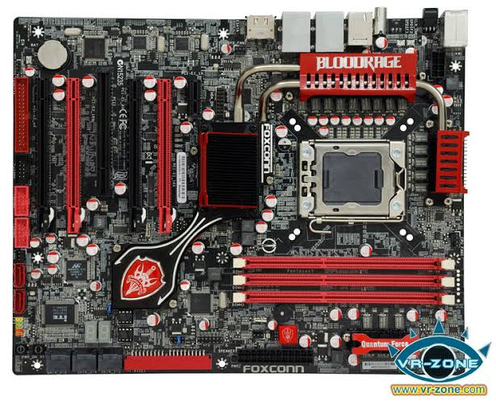
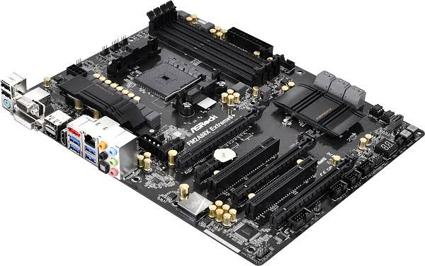
W pierwszych komputerach osobistych układy elektroniczne zajmowały dużo miejsca, a część funkcji realizowano za pomocą osobnych kart i modułów. Wraz z rozwojem technologii producenci zaczęli integrować coraz więcej elementów na jednej płycie.
Ważnym momentem był rok 1981, kiedy firma IBM wprowadziła komputer IBM PC 5150. Jego konstrukcja pomogła ukształtować rynek komputerów osobistych i sposób, w jaki projektowano ich podzespoły.
W kolejnych latach komputery stawały się coraz wydajniejsze. Rozwijały się procesory, pamięci RAM, karty rozszerzeń i interfejsy komunikacyjne. Płyty główne musiały nadążać za tymi zmianami.
W 1995 roku firma Intel wprowadziła standard ATX, który uporządkował między innymi układ płyty, rozmieszczenie złączy oraz sposób jej montażu w obudowie. Standard ten, w kolejnych wersjach, jest wykorzystywany również współcześnie.
Współczesne płyty główne obsługują szybkie pamięci, dyski SSD NVMe, zaawansowane karty graficzne i nowoczesne procesory wielordzeniowe. Mogą również oferować wbudowane Wi-Fi, Bluetooth oraz szybkie porty USB.
Mimo że ich wygląd zmienił się przez dziesięciolecia, podstawowe zadanie pozostało takie samo: łączenie podzespołów i umożliwianie im współpracy.
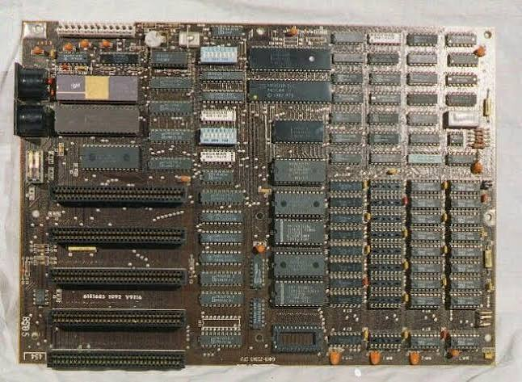
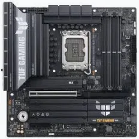
Socket to specjalne gniazdo, w którym montuje się procesor. Musi być ono zgodne z konstrukcją CPU. Przykładowo procesory AMD Ryzen korzystają z różnych gniazd zależnie od generacji, takich jak AM4 i AM5. W przypadku procesorów Intel również stosuje się różne rodzaje gniazd.
Są to podłużne gniazda służące do instalowania pamięci operacyjnej. RAM przechowuje tymczasowo dane i instrukcje potrzebne aktualnie uruchomionym programom. Większa ilość pamięci może ułatwić jednoczesną pracę z wieloma aplikacjami.
PCI Express, nazywane również PCIe, pozwala podłączać karty rozszerzeń. Najbardziej znanym przykładem jest karta graficzna. W zależności od płyty dostępne są również dodatkowe gniazda dla innych kart, na przykład sieciowych.
Złącza te służą do podłączania nośników danych. M.2 może obsługiwać szybkie dyski SSD NVMe, a SATA jest wykorzystywane między innymi przez wiele dysków SSD i HDD. Nie każde gniazdo M.2 obsługuje jednak te same standardy.
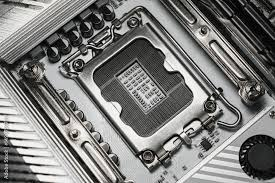
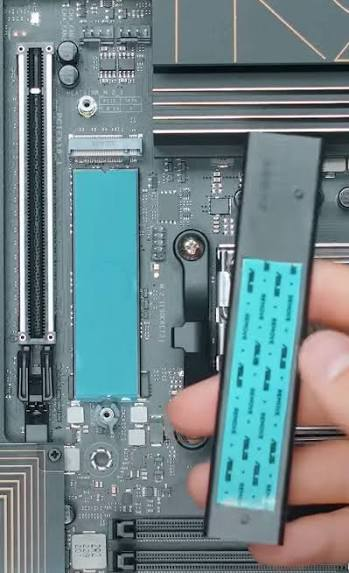
Chipset to układ lub zestaw układów odpowiedzialnych za obsługę określonych funkcji płyty głównej. Współczesne procesory przejęły część zadań, które dawniej realizował chipset, dlatego jego rola zależy od platformy i generacji sprzętu.
Chipset może wpływać na liczbę dostępnych portów, możliwości rozbudowy, obsługę dodatkowych urządzeń oraz niektóre funkcje procesora i pamięci. Dlatego dwie płyty z tym samym socketem nie zawsze oferują identyczne możliwości.
Procesor potrzebuje odpowiedniego napięcia elektrycznego. Sekcja VRM przekształca napięcie dostarczane przez zasilacz na wartości wymagane przez procesor i pomaga utrzymywać je na odpowiednim poziomie.
Dobra sekcja zasilania i właściwe chłodzenie mają szczególne znaczenie w komputerach z wydajnymi procesorami. Pod dużym obciążeniem elementy VRM mogą się nagrzewać, dlatego często są wyposażone w metalowe radiatory.
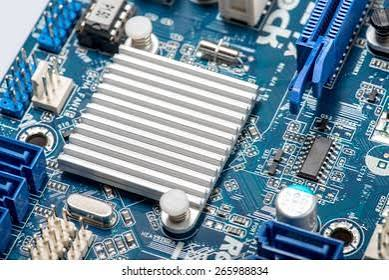
BIOS to oprogramowanie układowe, które w starszych komputerach odpowiadało za podstawowe czynności wykonywane podczas uruchamiania sprzętu. Współczesne komputery najczęściej korzystają z UEFI, czyli nowocześniejszego rozwiązania pełniącego podobną rolę.
Po włączeniu komputera UEFI inicjalizuje podzespoły, sprawdza ich podstawowe działanie i rozpoczyna proces uruchamiania systemu operacyjnego. Umożliwia również zmianę wielu ustawień sprzętowych.
Na wielu płytach głównych znajduje się niewielka, okrągła bateria, często typu CR2032. Podtrzymuje ona działanie zegara czasu rzeczywistego i pomaga zachować określone ustawienia konfiguracyjne, gdy komputer jest odłączony od zasilania.
Gdy bateria się wyczerpie, komputer może na przykład tracić ustawienie daty i godziny. Nie oznacza to jednak automatycznie utraty wszystkich plików zapisanych na dysku.
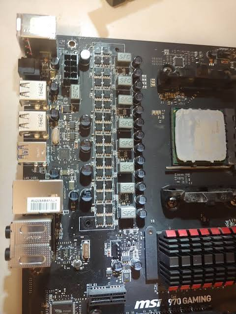
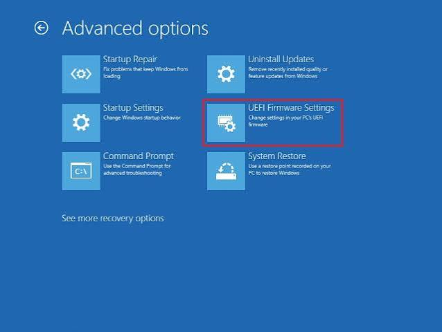
ATX to popularny format płyt głównych przeznaczonych do komputerów stacjonarnych. Zazwyczaj zapewnia sporo miejsca na pamięć RAM, karty rozszerzeń i dodatkowe złącza.
Micro-ATX jest mniejszy od standardowego ATX. Może być dobrym wyborem do komputera domowego lub gamingowego, gdy nie potrzebujemy wielu dodatkowych kart rozszerzeń.
Mini-ITX to kompaktowy format stosowany w niewielkich komputerach. Zajmuje mało miejsca, ale zwykle oferuje mniej slotów rozszerzeń i tylko dwa gniazda RAM.
Przy wyborze płyty trzeba sprawdzić, czy jej format pasuje do obudowy. Ważne są również socket procesora, rodzaj pamięci RAM, dostępne złącza i możliwości chłodzenia.
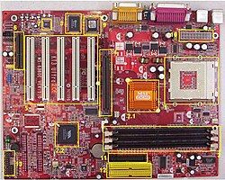
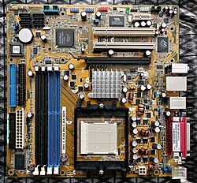
Płyta główna składa się z kilku warstw ścieżek przewodzących. Dzięki nim sygnały elektryczne mogą przemieszczać się pomiędzy procesorem, pamięcią i pozostałymi podzespołami.
Procesor musi być zgodny z gniazdem płyty głównej. Czasami potrzebna jest również aktualizacja BIOS-u lub UEFI, aby komputer prawidłowo uruchomił procesor.
Bateria CMOS, często typu CR2032, pomaga podtrzymywać zegar i ustawienia konfiguracyjne płyty głównej, gdy komputer jest odłączony od zasilania.
Wiele współczesnych płyt głównych ma wbudowaną łączność Wi-Fi i Bluetooth. Dzięki temu nie zawsze trzeba kupować dodatkowe karty rozszerzeń.
Format ATX oferuje zwykle więcej miejsca na złącza niż Mini-ITX, ale sam rozmiar płyty nie decyduje o wydajności komputera.
Płyta główna jest podstawą komputera, ponieważ łączy podzespoły i pozwala im współpracować. Jej konstrukcja decyduje o tym, jakie procesory, pamięci i urządzenia można zamontować oraz jakie funkcje będą dostępne.
Przy wyborze płyty głównej warto zwrócić uwagę na zgodność z procesorem, rodzaj pamięci RAM, liczbę złączy, możliwości rozbudowy, chłodzenie sekcji zasilania oraz rozmiar obudowy.
Chociaż płyta główna nie zawsze jest tak widoczna jak karta graficzna czy procesor, bez niej współczesny komputer nie mógłby działać jako jeden spójny system.